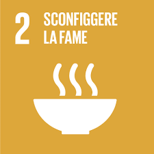
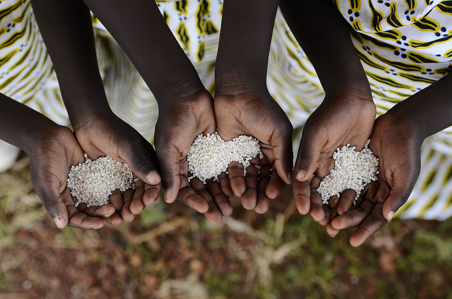

OBIETTIVO 2

SCONFIGGERE LA FAME
L’obiettivo 2 vuole porre fine alla fame, raggiungere la sicurezza alimentare, migliorare la nutrizione e promuovere un’agricoltura sostenibile.
Per raggiungere questo obbiettivo, è stato stabilito che bisogna:
- Aumentare gli investimenti;
- Raddoppiare la produttività agricola e il reddito dei produttori di cibo su piccola scala;
- Adottare misure per garantire il corretto funzionamento dei mercati;
- Garantire sistemi di produzione alimentare sostenibili.
